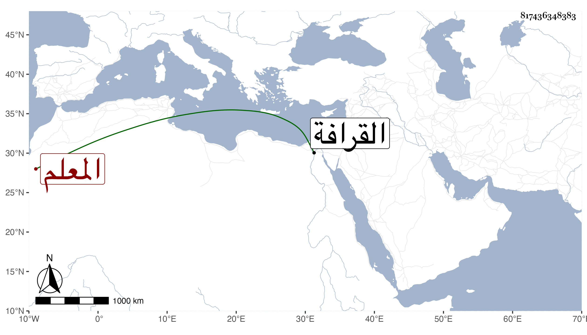

0902Sakhawi.DawLamic.ITO20230111-ara1.EIS1600.817436348383
Biography ID: 817436348383
970
محمد بن أحمد بن أحمد بن علي بن عبد الله بن علي ناصر الدين بن الشهاب ابن الطولوني المعلم ابن المعلم الماضي أبوه ، كان يلي معلمية السلطان وتزوج الظاهر بأخته . مات بعد أبيه بأشهر في ليلة الخميس خامس عشري رجب سنة إحدى ودفن من الغد في تربتهم من القرافة بعد أن صلى عليه في مشهد حضره الخليفة المتوكل على الله وغالب الأمراء والأعيان ، وكان شابا جميل الوجه طويل القامة له مشاركة وله اعتقاد في الفقراء . ذكره العيني وغيره .
